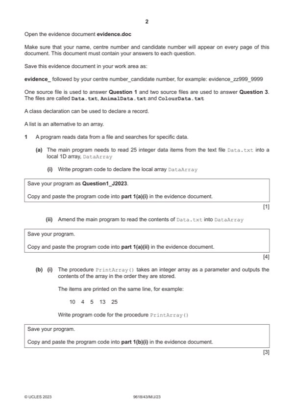

Question 1

Original paper page 2
Part 1(a)(i) — solution
- 1D array with name DataArray (with 25 elements of type Integer)
Visual Basic (VB.NET)
Dim DataArray(24) As Integer
Python
DataArray = [] #25 elements Integer 2023 Page 4 of 38 9618/43 Cambridge International AS & A Level – Mark Scheme May/June 2023
Mark points
- 1D array with name DataArray (with 25 elements of type Integer)
Part 1(a)(ii) — solution
- Opening file Data.txt to read
- Looping through all the 25/EOF …
- … reading each line and storing/appending into array
- Exception handling with appropriate output
- Closing the file (in an appropriate place)
Visual Basic (VB.NET)
try
Dim DataReader As New System.IO.StreamReader("Data.txt")
Dim X As Integer = 0
Do Until DataReader.EndOfStream
DataArray(X) = DataReader.ReadLine()
X = X + 1
Loop
DataReader.Close()
Catch ex As Exception
Console.WriteLine("Invalid file")
End Try
2023 Page 5 of 38
9618/43 Cambridge International AS & A Level – Mark Scheme May/June 2023
Mark points
- Opening file Data.txt to read
- Looping through all the 25/EOF …
- … reading each line and storing/appending into array
- Exception handling with appropriate output
- Closing the file (in an appropriate place)
Part 1(a)(ii) — solution
- DataFile = open("Data.txt",'r')
Python
try:
DataFile = open("Data.txt",'r')
for Line in DataFile:
DataArray.append(int(Line))
DataFile.close()
except IOError:
print("Could not find file")
2023 Page 6 of 38
9618/43 Cambridge International AS & A Level – Mark Scheme May/June 2023
Mark points
- DataFile = open("Data.txt",'r')
Part 1(b)(i) — solution
- Procedure header (and close where appropriate) with (at least) one (integer array) parameter
- Outputting all (25) array elements …
- …on one line
Visual Basic (VB.NET)
Sub PrintArray(DataArray)
Dim OutputData As String = "";
For x = 0 To DataArray.length - 1
OutputData = OutputData & DataArray(x) & " "
Next
Console.WriteLine(OutputData)
End Sub
Python
def PrintArray(DataArray):
output = ""
for X in range(0, len(DataArray)):
output = output + str((DataArray[X])) + " "
print(output)
2023 Page 7 of 38
9618/43 Cambridge International AS & A Level – Mark Scheme May/June 2023
Mark points
- Procedure header (and close where appropriate) with (at least) one (integer array) parameter
- Outputting all (25) array elements …
- …on one line
Part 1(b)(ii) — solution
1 mark for calling PrintArray with the array as a parameter 1
Example program code:
VB.NET
PrintArray(DataArray)
Python
PrintArray(DataArray)
Visual Basic (VB.NET)
PrintArray(DataArray)
Python
PrintArray(DataArray)
Mark points
- Include the ideas shown in the solution above.
Part 1(b)(iii) — solution
1 mark for screenshot 1
e.g.
2023 Page 8 of 38
9618/43 Cambridge International AS & A Level – Mark Scheme May/June 2023
Mark points
- Include the ideas shown in the solution above.
Part 1(c) — solution
- Function header (and close where appropriate) taking array and search value as parameters
- Looping through each array element and keeping count of the number of times the parameter appears
- Returning the calculated count value
Visual Basic (VB.NET)
Function LinearSearch(DataArray, DataToFind)
Dim Count As Integer = 0
For x = 0 To DataArray.length - 1
If DataArray(x) = DataToFind Then
Count = Count + 1
End If
Next
Return Count
End Function
Python
def LinearSearch(DataArray, DataToFind):
Count = 0
for X in range(0, len(DataArray)):
if(DataArray[X] == DataToFind):
Count +=1
return Count
2023 Page 9 of 38
9618/43 Cambridge International AS & A Level – Mark Scheme May/June 2023
Mark points
- Function header (and close where appropriate) taking array and search value as parameters
- Looping through each array element and keeping count of the number of times the parameter appears
- Returning the calculated count value
Part 1(d)(i) — solution
- Prompt and reading input …
- …with validation for whole number between 0 and 100 inclusive
- Calling LinearSearch() with array and valid data input and storing/using return value
- Output of the message with return value
Visual Basic (VB.NET)
Console.WriteLine("Enter a number to find ")
Dim DataToFind As Integer = -1
Do Until DataToFind >= 0 And DataToFind <= 100
DataToFind = Console.ReadLine()
Loop
Dim NumberTimes = LinearSearch(DataArray, DataToFind)
Console.WriteLine("The number " & DataToFind & " is found " & NumberTimes & " times.")
Python
DataToFind = int(input("Enter a number to find "))
while DataToFind < 0 or DataToFind > 100:
DataToFind = int(input("Enter a number to find "))
NumberTimes = LinearSearch(DataArray, DataToFind)
print("The number", DataToFind, "is found", NumberTimes, "times")
2023 Page 10 of 38
9618/43 Cambridge International AS & A Level – Mark Scheme May/June 2023
Mark points
- Prompt and reading input …
- …with validation for whole number between 0 and 100 inclusive
- Calling LinearSearch() with array and valid data input and storing/using return value
- Output of the message with return value
Part 1(d)(ii) — solution
1 mark for screenshot e.g. 1
2023 Page 11 of 38
9618/43 Cambridge International AS & A Level – Mark Scheme May/June 2023
Mark points
- Include the ideas shown in the solution above.